If you grew up watching Pippi Longstocking, there is a good chance one particular town lives rent-free in your memory. Its cobblestone streets, its crooked little houses, the policemen Kling and Klang perpetually failing to catch a red-haired girl who could lift a horse. That town is Visby. The streets, the walls, the turret gateways that flicker across your screen in Astrid Lindgren's beloved series. All of it is real, all of it is here, on the Swedish island of Gotland in the middle of the Baltic Sea. Pippi bought her sweets here. Tommy and Annika played here. And if you visit, you will walk the same cobblestones they did.
But Visby is not Pippi's town alone. Scratch the surface of Visby and you don't find a film set. You find an island 'as wild and romantic as the winds and waves can fashion them', so thoroughly preserved throughout centuries that walking through it today feels less like tourism, and more like time travel.
Gotland: Where the Middle Ages Never Really Left — a Short History
By the 12th century, Visby had become one of the most important trading ports in northern Europe. The Hanseatic League — a powerful alliance of Baltic merchants, essentially the medieval precursor to the European Union — made the island a commercial powerhouse. Gotlandic traders had already pushed deep into Russia, establishing stations as far as Novgorod, where they traded furs, wax, tar, and timber, some of it selling all the way to the English crown. Silver poured in. Ninety-two parish churches were built across an island just 120 km long, which shows the extraordinary wealth Visby had. Archaeologists are still digging up hoards of silver coins across Gotland today.
In 1350, the Black Death arrived and killed a third of the island's population in a single devastating wave. Eleven years later, the Danish king Valdemar Atterdag invaded in a brutal military campaign. What followed was centuries of being passed between powers — Danes, Teutonic Knights, Nordic union kings — each leaving their mark, none bringing prosperity back. By the 16th century, all of Visby's churches except St Mary's Cathedral had been abandoned. The city that was once a pearl had become a peril.
When Gotland finally passed to Sweden in 1645, it was too peripheral and too poor to attract the waves of modernization that swept through the mainland. New fashions in architecture never arrived. The medieval walls were never torn down to make way for boulevards. The old buildings, the craft traditions, even a distinctive local dialect — all of it survived simply because no one had the money or the reason to replace them. What neglect preserved, UNESCO recognised: Visby was designated a World Heritage Site in 1995.
Road Trip to Visby: Our Journey from Lund to Gotland
I have a confession to make. I had never heard of Gotland until I came to Sweden. It was not on any map I had drawn in my mind. But after we had settled into our new life, whispers of this island kept reaching us. "You must visit Visby," everyone said. And so, eventually, we decided they were right.
There are two ways to reach this medieval jewel. You can fly, of course. Planes leave from Stockholm, Gothenburg, Trollhättan, and even Helsinki, touching down at Visby Airport just a short bus ride from the city center. But that felt too quick, too removed from the romance of the journey. We wanted something slower, something that would let us feel the Baltic breeze before we even arrived.
So we chose the ferry.
Two mainland ports send boats to Visby: Nynäshamn and Oskarshamn. The crossing takes just over three hours, and the traffic runs daily. But here is a warning I must shout from the rooftops: book your tickets and your accommodation way, way in advance. Visby in summer is no secret, and the crowds know it well.
Because we were travelling from Lund by car, Oskarshamn became our natural choice. It was closer, simpler, and the road leading there promised its own quiet adventures.
We left home at six in the morning. Our ferry was not scheduled to leave until half past eleven, but we are not the kind of family that rushes well. We prefer to drift toward our destination, with room for tea breaks and wandering feet. The distance from Lund to Oskarshamn is about 330 kilometres, and about four hours of driving if the road is kind to you.
We followed the E22 highway. And what a road it is. It winds along the Baltic coast, offering glimpses of grey-blue water between stands of pine and birch. Small towns appear like postcards. Old churches and stone walls whisper of centuries we will never fully know. The route is safe and well maintained, a pleasure to drive whether you are alone or, like us, accompanied by a four-year-old who demands snacks and songs in equal measure.
Along the way, Sweden offers what it calls rastplatser — rest areas that are modest in name but generous in spirit. They come with parking, toilets, picnic tables, and often a view that makes your sandwich taste better than it has any right to. For more information about rastplatser, see the tips section below.
About two hours into our drive, we pulled into Rastplats Bröms. It was a nice rest place with open space, a few wooden tables, and the quiet rustle of wind through the grass. Our daughter, who had been strapped into her seat for what felt like an eternity to her, finally ran in circles, her laughter chasing away any lingering tiredness. We sipped tea from a thermos and ate the sandwiches we had packed that morning. Half an hour passed without us noticing.
Then we got back in the car and drove the rest of the way.
We arrived at the Oskarshamn ferry terminal right on time. The terminal offers both fenced and unfenced parking, short-term and long-term. We found a long-term parking spot at Adelsgatan, parked the car, and walked the short distance to the boarding area. The ferry was waiting for us, white and patient against the grey harbour water. For information about parking at Oskarshamn terminal, see the tips section below.
The ride to Visby, which is around 3 hours from Oskarshamn, was smooth. We stood on the deck for a while, watching the mainland shrink behind us until it was only a memory. The wind was cold, but the sun was warm, and I thought: This is how a holiday should begin. Not in a hurry, but in a slow, deliberate sail toward something new.
We arrived in Visby with our hearts already lighter than when we had left. The ferry had delivered us gently to the island, and as we walked from the terminal toward our apartment in Östra Visby, we found ourselves welcomed by the ruins of the ancient city wall, the sea stretched out in shades of blue and grey, and the magical wind of the Baltic. It was one of those rare moments when every plan, every decision, every mile driven suddenly felt justified. Nothing had gone in vain.
After dropping off our bags and refreshing ourselves, we stepped back out into the old city.
And there it was again — the Visby city wall, ringing the old town like a protective embrace. You cannot say you have visited Visby without standing in front of this medieval giant. It is the largest and best-preserved city wall in all of Northern Europe: nearly 3.5 kilometers of local limestone encircling the historic heart of the city, punctuated by roughly fifty towers of every shape and size, rising as high as eleven meters in places. Walking alongside it, I felt as though I had stepped directly into a storybook somebody forgot to close.
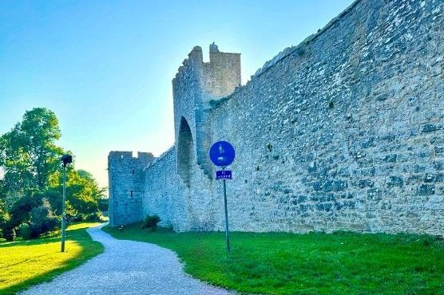
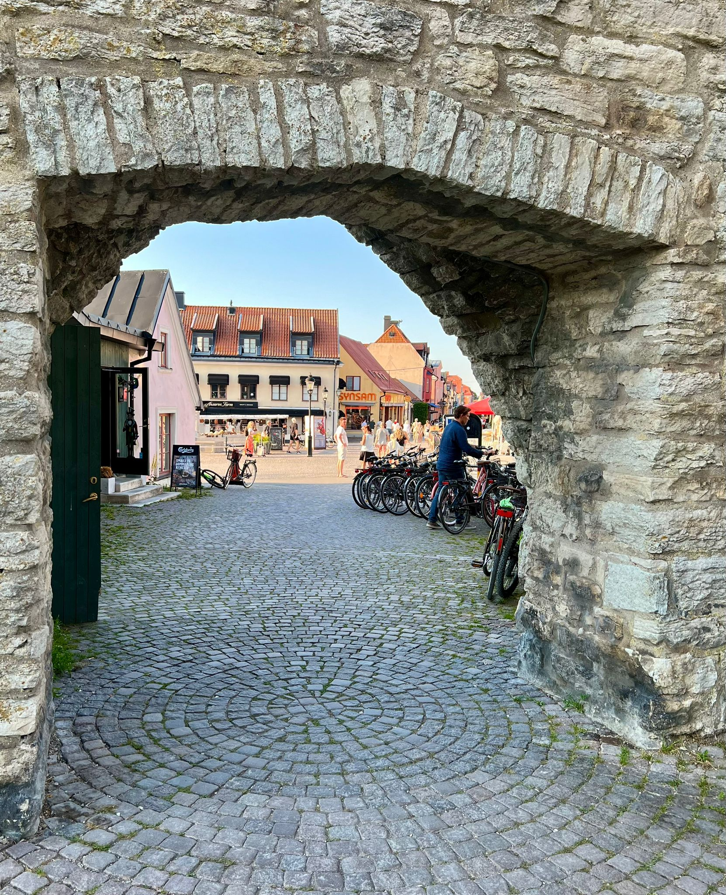
We entered the old town through Söderport (South gate) and walked north along Adelsgatan. After about five hundred meters, we found ourselves at a small viewpoint which was one of the best views Visby offered. With orange rooftops tumbling down toward the Baltic, the water merging at the horizon, and the evening sun turning the whole scene faintly gold, it was the kind of view that makes you forget everything.
St Peter and St Hans — Churches Torn Down on Purpose
A few steps further brought us to the ruins of St Peter and St Hans, once the largest church in Visby, built in the southern part of the old town. St Peter's, dating from the mid-12th century, is considered the oldest church in the city; St Hans was added beside it in the early 13th century, and the two shared a wall in an arrangement that was, even by medieval standards, unusual. Both were demolished after the Reformation — not by neglect, but on purpose. The lord of Wisborg Castle worried that enemy cannons could use the church towers to bombard his fortress, and ordered them torn down.
Today only a fragment remains. We sat on one of the ruins and ate ice cream with a little bit of history for company, watching the ruin's silhouette catch the last of the evening light. It is, for all its violent backstory, a remarkably peaceful place to sit.
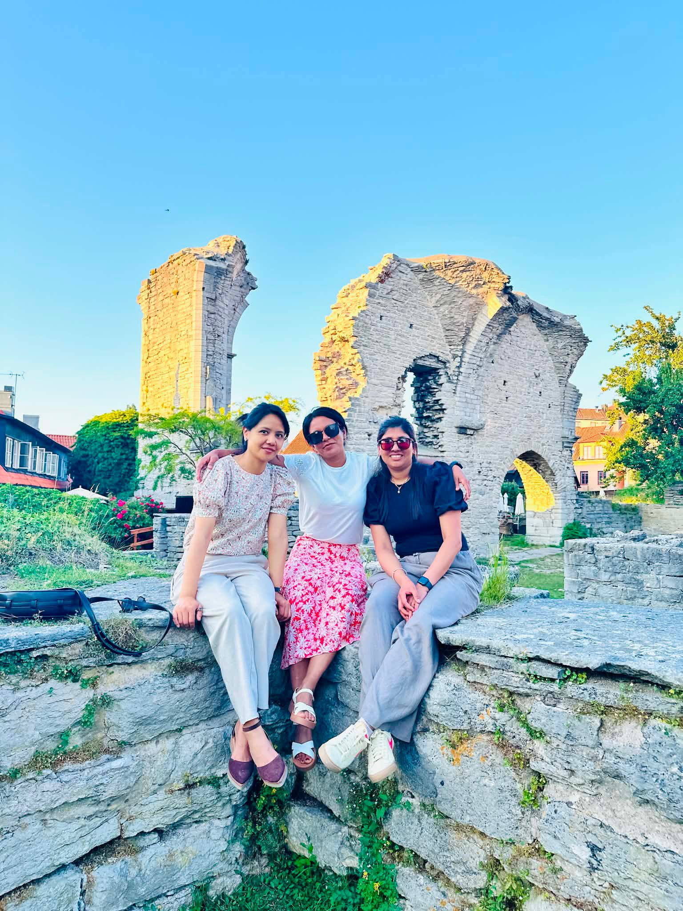
Walking back to the apartment that night, I found myself thinking that the real gift of Visby is not really the sights themselves. It is the particular feeling of being small inside something very, very old.
We had made a loose plan the evening before. Not a strict itinerary but more of a list of things we did not want to miss, and we let the day take us where it wanted. It took us very far.
Söderport: The Gate That Wasn't Always There
We began at Söderport, the South Gate, which stands at the southeastern corner of the city wall where the eastern and southern sections of the ring wall meet. It is one of those places that looks entirely ancient and permanent, as if it has always been there — but it hasn't. Unlike the city's other gates, archaeologists found no traces of an earlier gate at this location, which suggests Söderport was added at a later stage, probably around 1300–1350, when the wall was raised in height.
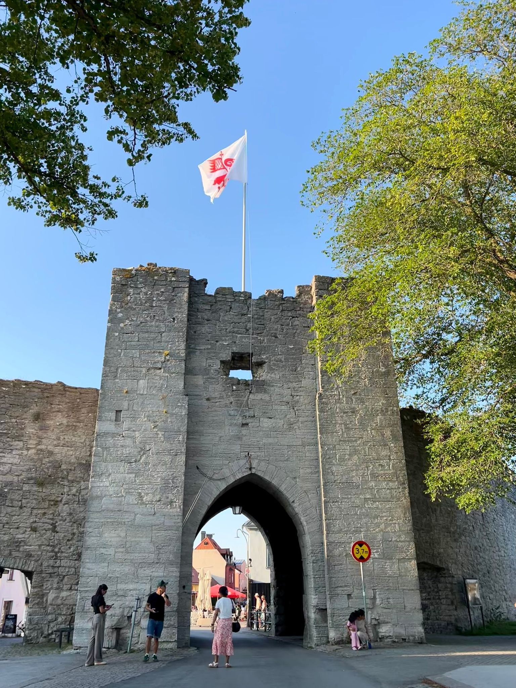
When the railway line between Visby and Hemse opened in 1878, with the station just outside Söderport, the gate became an even more important connection to the southern parts of the city. By 1947, traffic had increased so much that two pedestrian archways were cut into the wall on either side of the main gate, which is why it looks slightly wider than you'd expect.
Wisborgs Slott: The Castle That Ended Badly
A short walk from Söderport brought us to the site of Wisborgs Slott, or rather, to where it used to be. There is almost nothing left. A model mounted nearby shows what it once looked like: a serious, formidable fortification rising over the harbor with towers, a great hall, a chapel, and its own prison in the cellar.
Construction began in the early 15th century, initiated by the Teutonic Knights and later continued by Erik of Pomerania, who completed the first phase. The castle was built against the ring wall, which served as its southwestern and northwestern defense. When it was finished, it was considered an exceptionally strong fortress — one that was never once taken by an enemy through force.
The history of who lived there reads like a catalogue of Baltic villainy. Its most famous residents were all pirates: Erik of Pomerania, Ivar Axelsson Tott, and Sören Norby. The castle lords taxed the Gotlandic farmers to ruin, robbed merchant ships across the Baltic, and treated the island more or less as a private income source. The entire period of Wisborgs Slott, from 1407 to 1679, was by most accounts a catastrophe for Gotland.
The end came not from an enemy siege but from a calculated act of destruction. In 1679, the Danes blew up the castle themselves rather than let it fall into Swedish hands. A castle that no enemy could take was demolished by its own owners. Standing in the open space where it once stood, that felt like the darkest possible ending to a story.
Almedalen: Where the Harbour Used to Be
From the castle ruins we walked down to Almedalen, Visby's main park, which runs along the waterfront. It is lovely in the way that Scandinavian parks often are: green, unhurried, children playing, people eating lunch on benches with the sea in front of them.
But the ground beneath all of this was once the medieval harbor. Ships from across the Baltic docked here when Visby was one of the most important trading cities in northern Europe. Then, slowly, the seabed rose — a geological process still continuing today — and the water retreated. The harbor silted up and eventually became a garden. What had been the busiest place in the city became one of the quietest.
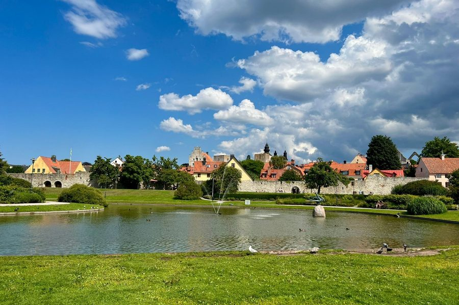
The park is also the site of Almedalsveckan — Sweden's most important political week, held every summer, which began in 1968 when a politician named Olof Palme stood on the back of a lorry here and gave a speech to whoever happened to be passing. Somehow that detail, a future Prime Minister on a lorry in a park that used to be a harbor, felt very Visby.
The Powder Tower, or Kruttornet
We found ourselves drawn especially to the Powder Tower, known locally as Kruttornet. Built around 1150 as a standalone defensive tower, it is the oldest non-religious building in Northern Europe and the oldest part of the wall. In the Middle Ages, it guarded the harbour when Almedalen was still a busy port. Later, during the 1600s and 1700s, it served as a prison, hence its old name, the Prison Tower. Only in the 18th century, when the Swedish state began storing gunpowder inside, did it earn the name Powder Tower. Standing before it, I tried to imagine the centuries it had witnessed: conflicts between the city and the governing assembly of Gotland, the comings and goings of Hanseatic merchants, and the quiet desperation of prisoners who once watched the same sea through narrow slits in the stone.
Sankt Lars and Drotten: Two Ruins, One Street
After lunch we walked into the old town and found Sankt Lars and Drotten, which stand almost directly opposite each other on the same narrow street. They make an odd pair: both abandoned in the Reformation, both reduced to open-air stone shells, both somehow still very present.
Sankt Lars, completed around 1210–1220, has a cross-shaped floor plan that is unusual for Visby — possibly inspired by Byzantine or Orthodox church architecture. It is small and intimate compared to the others, and unlike most of the ruins, you can actually climb its interior staircases and walk the upper passages. We did. The stone steps are medieval, worn smooth, and slightly terrifying. From the top, you look down through the empty windows onto the street below and feel, for a moment, genuinely inside the 13th century.
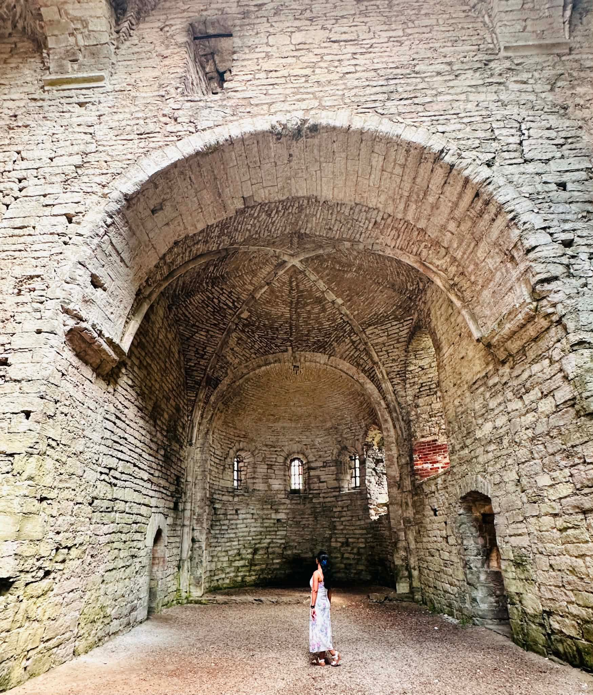
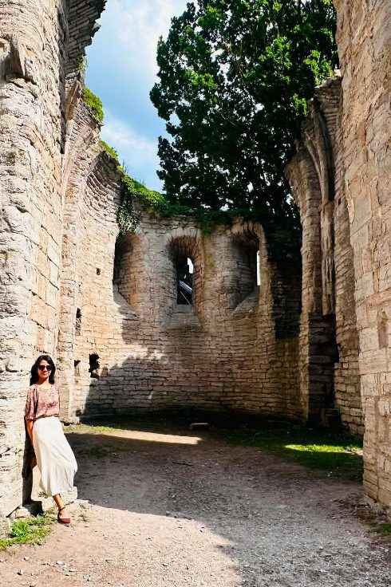
Drotten, built around 1240 for Visby's German merchant community, tells a different story through absence. When it was in use, its interior walls were covered entirely in frescoes — bright colours, painted scenes, a church that must have been startling to enter. We had seen the reconstruction at the Gotland Museum that morning, and standing in the grey ruin with that image still in mind made the emptiness feel strange and specific. This was not just a ruined building. It was a ruined painting.
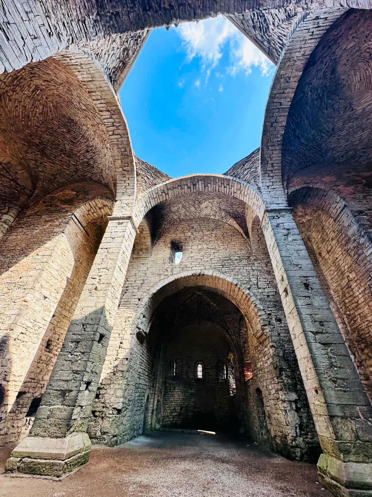
Domkyrkan: The One That Survived
We arrived at Visby Cathedral — Domkyrkan, dedicated to Saint Mary — in the middle of the afternoon, when the light was coming through the windows at a long angle. Of all the medieval churches in Visby, this is the only one still standing and still in use. Built in 1225, it was consecrated as a cathedral in 1572, the sole survivor of the Reformation that closed every other church in the city.
Inside, in a quiet corner, is a small display of artefacts from all the churches that did not survive. Stone fragments, carved details, photographs of what once stood. A record of everything that was lost. We spent longer there than we expected.
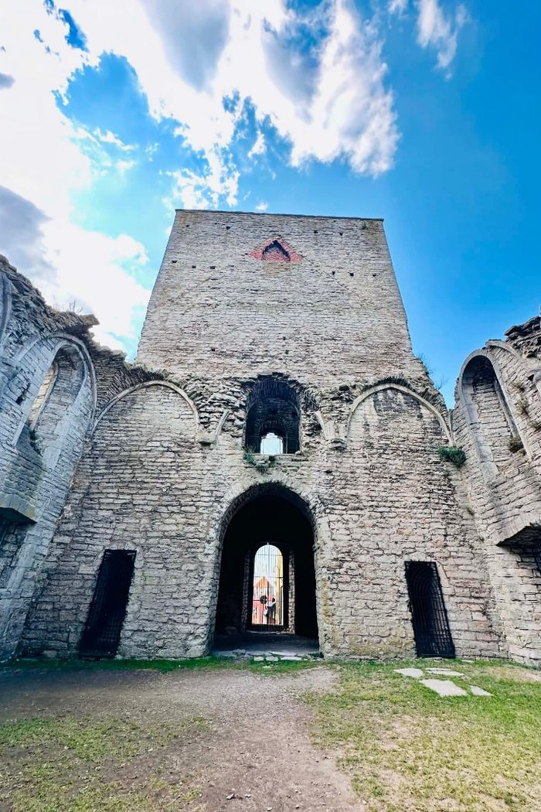
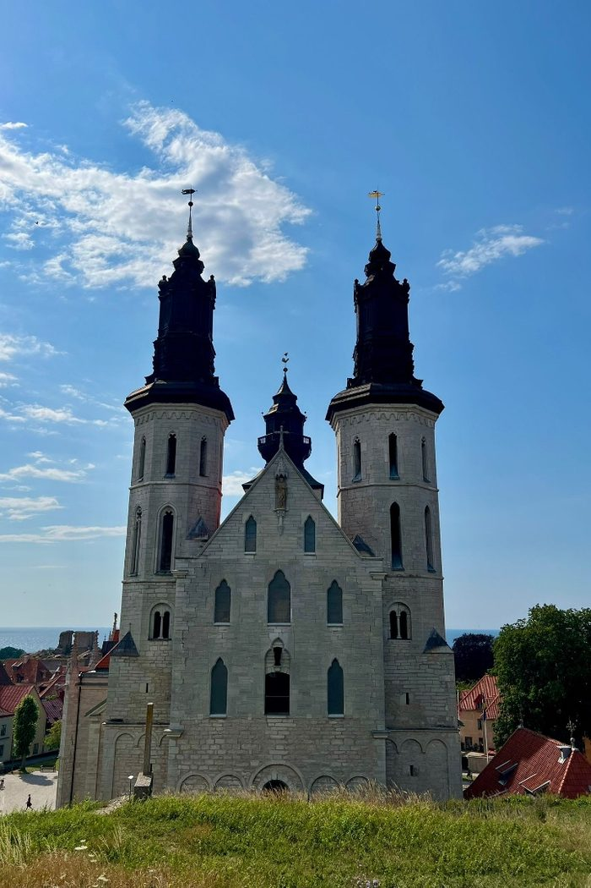
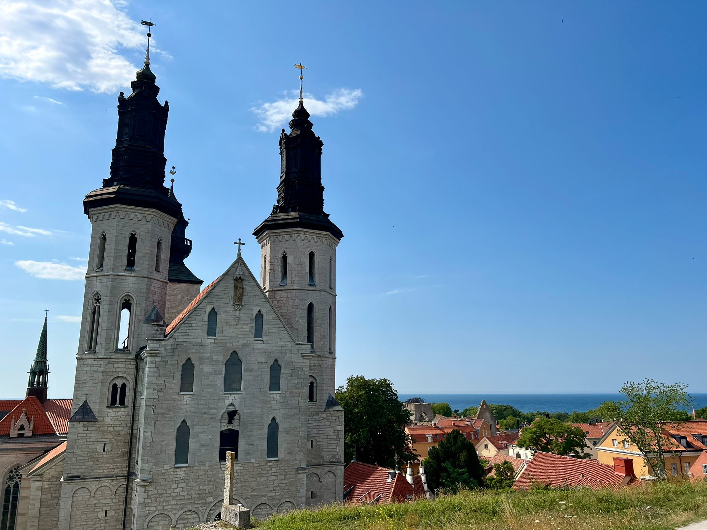
We climbed the stone steps toward Nygatan and found a viewpoint by chance, one that offered a stunning panorama of Visby's red rooftops, ancient ruins, and old town. Simple, unassuming, and perfectly placed, it invited us to sit, to breathe, and to simply be. The place is called Kramhållplats, which translates, beautifully, to "the hug place." And it reminded us to do exactly that. We stood there, arms wrapped around our loved ones, grateful for the moment, for the journey, for each other. I would not miss this spot if you visit Visby. Beyond the stunning view, it offers tired legs a chance to rest and weary spirits a chance to recharge fully and deeply.
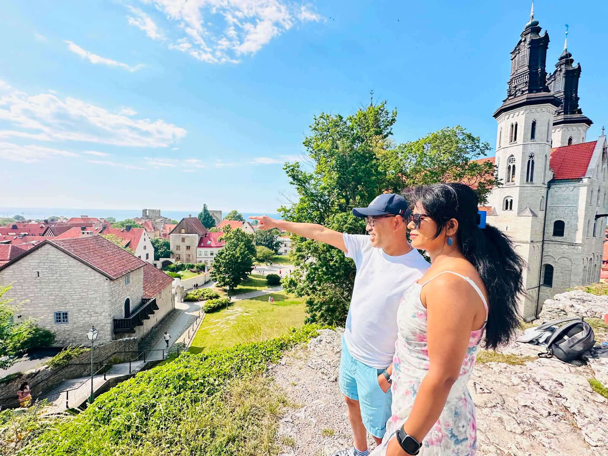
We then headed towards Stora Torget, Visby's main square. Exploring the winding streets had made us forget our hunger, but our legs and stomachs reminded us it was time to pause. Right at the square's edge sat Mel's Diner, and we stepped inside without a second thought. Stepping into Mel's felt like stepping into a 1950s American roadside café. Neon signs glow against walls covered in colorful posters, vintage vinyl records, Elvis collectibles, and shelves of nostalgic classic treasures. Even the staff wore period attire, and the coffee mugs and bathroom decor stuck faithfully to the retro script. It was playful, lively, and wonderfully welcoming, a fun stop for the whole family.
St. Karin's Church Ruins — Where the Sky Is the Roof
Refreshed and full, we continued our walk toward the ruins of St. Karin Church, another gem located right next to Stora Torget. Built by the Franciscan order, the Mendicant Brothers, as a monastery church, it began as a long, narrow, single-nave structure with tall, round-arched windows. Completed in 1250, it was named for Saint Catherine of Alexandria, which is why locals eventually shortened it from St Catherine's to simply St Karin.
As the centuries passed, grander plans took shape. A larger three-nave hall church was begun, but history intervened — wars, conquests, and collapses slowed progress again and again. The church was never fully completed, yet it was once one of Visby's largest and most beautiful. Magnificent stained glass windows once filled the choir with heavenly light, captivating all who entered. After serving as a hospital, the church fell into disrepair. A vault collapsed during a service in the 1540s and it was abandoned.
Today, it stands as a mighty ruin — a skeleton of what was once one of Visby's most beautiful churches. Yet even in its decay, it is breathtaking. The high walls rise around you, their intricate brickwork still intact, while sunlight pours through the empty windows where stained glass once glowed. With the sky as its rooftop, the ruin opens up in the most stunning way: a photographer's paradise. We took far more pictures than we planned and stayed much longer than we intended. And as if the setting could not be more perfect, a market was taking place right beside it, filling the square with life and making the whole scene feel wonderfully vibrant.
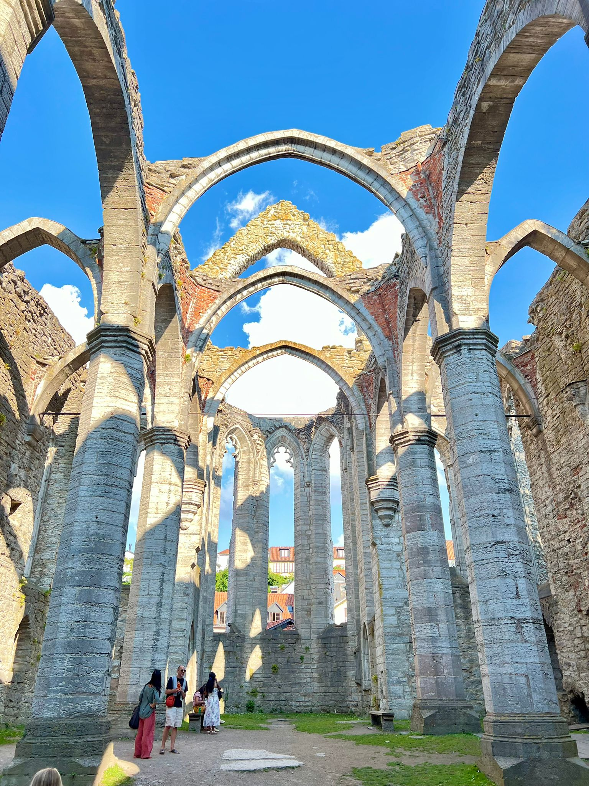
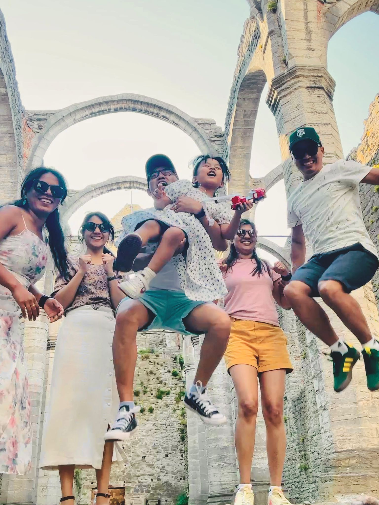
The Ring Wall and Norderport: Walking the Edges
We spent the late afternoon walking sections of Ringmuren, the city wall, ending at Norderport, the North Gate. Together with Österport, Norderport is one of the oldest towers in the entire ring wall, built around 1289, and it shows: standing in steeply rising, hilly terrain, the tower has serious dimensions and was clearly built for serious defense. This was the gate through which all traffic from the north entered the city. In peacetime, the gates stood open, blocked only by a chain, with the outer wooden gates reinforced by a trapdoor for extra security. In wartime, those gates were shut and the iron grate lowered.

Walking through it from outside, approaching as medieval travelers from the north once did, you understand immediately what it was built to say: this city had money, and this city intended to keep it. Norderport is also, fittingly, one of the few gates in the wall still used for car traffic today, eight centuries on, still doing exactly what it was built to do.
Even after the ring walk, we were not ready to let go. But our legs had had enough. We grabbed a takeaway pizza, limped back to our apartment, and sat there: footsore, full, and already making a mental list of all the things we had missed. Visby has a habit of making a full day feel incomplete. And somehow, that is its greatest gift.
No visit to Visby is complete without seeing its famous limestone sea stacks (raukar in Swedish, rauk: singular), that seem to rise from another world. And the best place to find them is Fårö, the small island just north of Gotland. So we booked a taxi-van for six people, set the alarm early, and were on the road by nine. Two days inside Visby's medieval walls had been magical, but we needed a change of scene. Fårö (Sheep Island), with its wild coastline and haunting stone figures, was just what we needed.
Getting there requires a short ferry crossing from Fårösund on Gotland's northern tip. The car ferry is completely free and runs very often, at least in summer, and it takes just under ten minutes to cross. Ten minutes, and you arrive somewhere that feels nothing like the mainland.
Langhammars: The End of the World
Our first stop was Langhammars, the rauk field on Fårö's northwestern tip, and nothing quite prepares you for it.
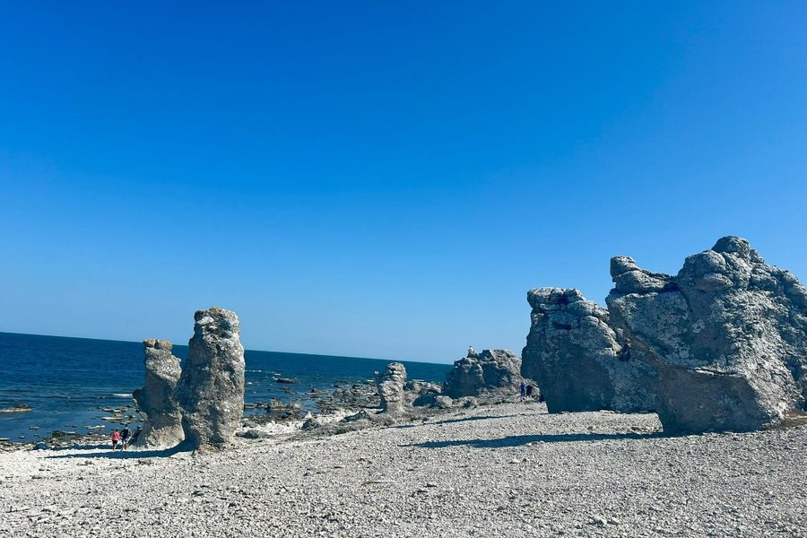
Raukar (singular: rauk) are the limestone sea stacks that Gotland and Fårö are famous for. They originate from ancient coral reefs dating back approximately 420 million years to the Silurian period, when this entire region was a shallow tropical sea teeming with corals. Over millions of years, waves and glaciers eroded the softer stone around the harder reef limestone, leaving these columns standing alone on the shoreline, frozen in place, endlessly weathered, going nowhere.
The rauks on the beach at Klajvika in Langhammars are without a doubt the most photographed rauks on Gotland, and they are also depicted on the back of the Swedish 200 kronor banknote. We did not know this until afterwards, which made the whole thing feel even more satisfying. We had stumbled onto something famous without knowing it.
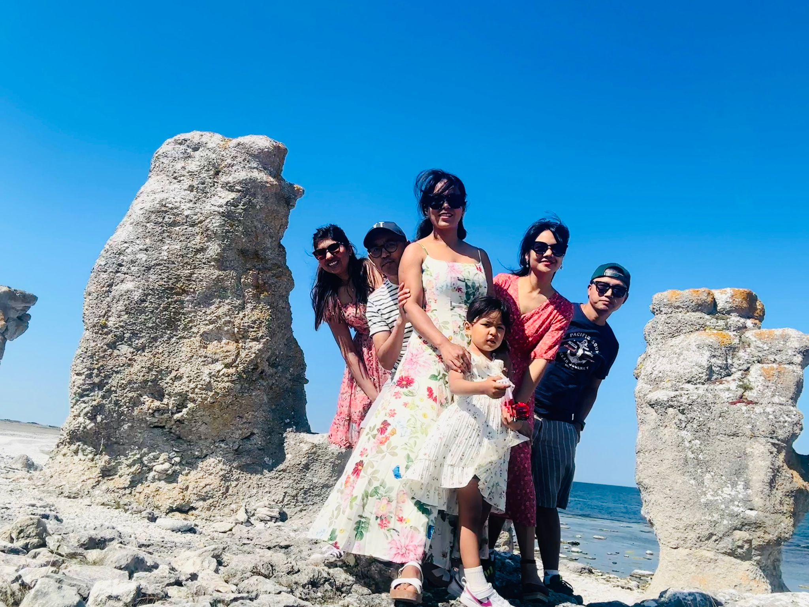
Some of them are more than eight meters high. From a distance, driving through the flat heathland of Fårö, they appear modest. You park, walk a short path through pine trees, and then suddenly they are in front of you, right at the water's edge, larger and stranger than you expected. Each one looks like something: a face, a seated figure, a hunched animal. The most famous is Langhammarsgubben, "the old man of Langhammars," a face-shaped sea stack worn by thousands of years of erosion into something that does, unmistakably, resemble a human profile.
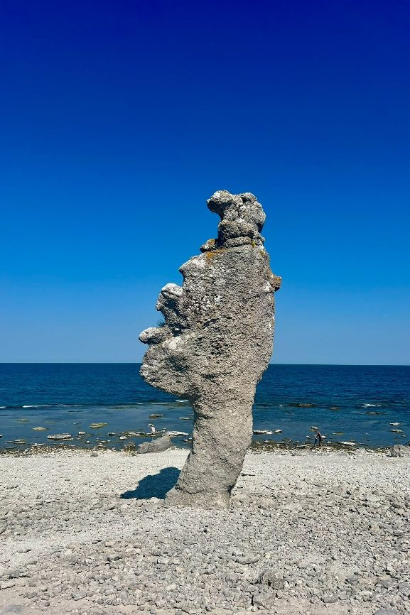
We spent about an hour there, walking between the formations, taking photographs, making videos, and occasionally just standing still looking at the Baltic beyond. The pebble beach is wide and white, the water a very specific shade of greenish-blue that photographs better than it has any right to. It blows quite a lot at Langhammars since the rauks are right by the water, so bring an extra layer and wear comfortable shoes, you are walking on rocks.
Another interesting activity at Langhammars is finding fossils. The northern shingle beaches here, made up of smoothed pebbles and exposed bedrock, are prime spots for discovering fossils from the Silurian period — brachiopods, corals, and more. Scan the rocks beneath your feet, and you might see something. Nothing dramatic, nothing museum-worthy, but still thrilling and memorable.
Gamla Hamn: The Harbour That Disappeared
Our second stop was Gamla Hamn, the Old Harbour on Fårö's northwestern coast, about twenty minutes' drive from Langhammars. Smaller, quieter, and in its own way more layered with history.
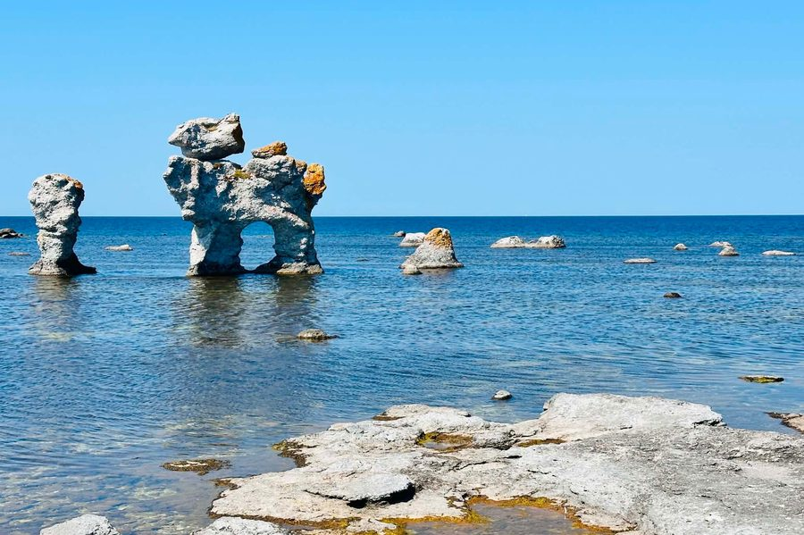
The name tells the story. During the Viking Age and early Middle Ages, there was a sheltered harbor here. The opening, which probably faced north, was gradually closed off by land uplift and powerful storms, most likely as early as the 14th century. What was once a working port where Viking traders fished and traded is now a small, still lagoon, barely ninety meters wide, almost completely landlocked. The sea is still visible just beyond it. The distance between an active harbor and a quiet lake turned out to be about six hundred years.
On the pebble beach inside the nature reserve, there are about fifteen graves that are probably from Viking times, visible as low stone mounds. We walked past them without realizing at first what they were, just a series of rounded stones slightly raised above the beach, and then read the information board and went back to look properly. There is something very matter-of-fact about Viking graves on a pebble beach with the sea ten meters away.
Just southeast of the burial ground, inside the forest edge, are the remains of a small church with a surrounding cemetery, usually called St Olof's Church, associated with the visit of Olof the Saint to Gotland in the early 1000s. Not much remains of it, a few low stone walls barely visible in the undergrowth, but the atmosphere of the whole place carries a weight that is hard to describe.
And then there are the rauks. Gamla Hamn is home to the most famous rauk on all of Fårö: Kaffepannan, also called Hunden (the dog), which with the right angle of looking does resemble a dog watching the horizon. It stands partly in the water, a gate-shaped formation, and at the right time of day the light comes through it in a way that explains why people keep coming back to photograph it. We made several TikToks here too. Kaffepannan was very patient about it.
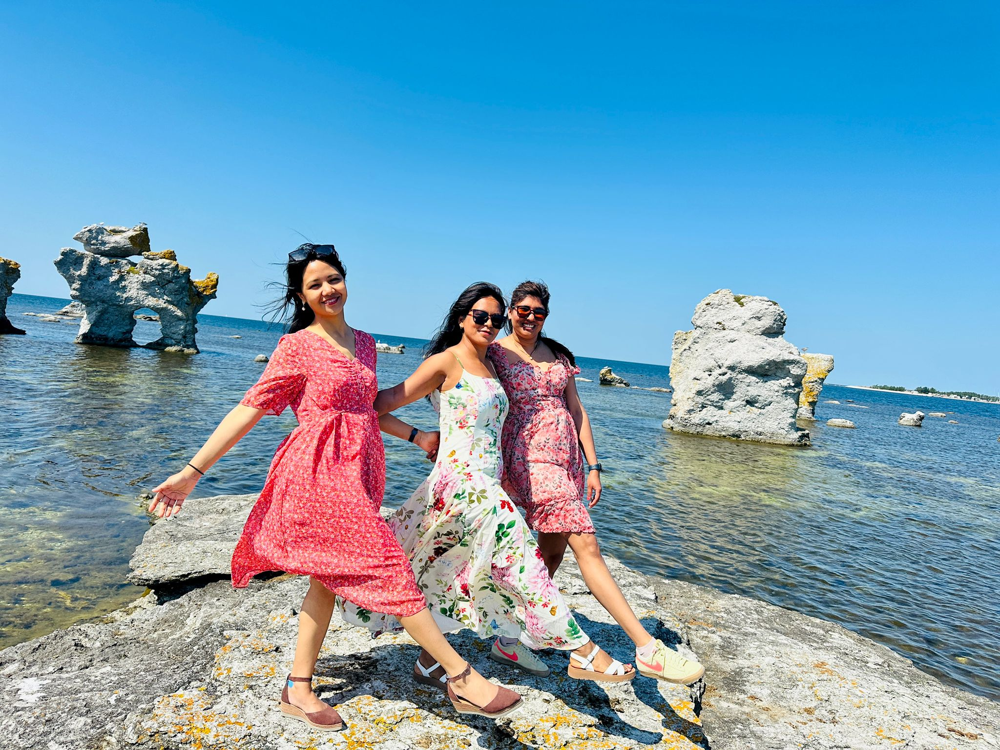
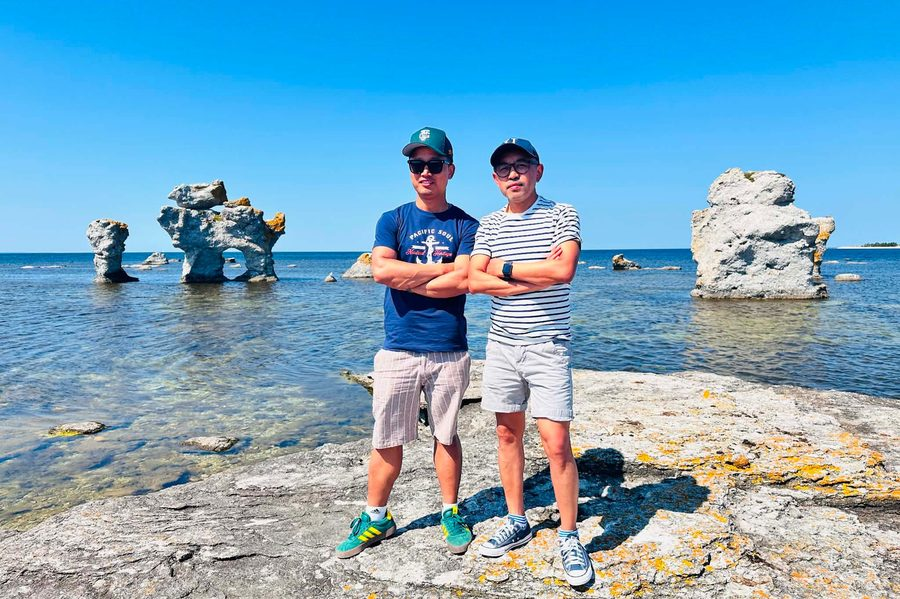
We spent another hour here, walking the shore, looking at the water, and trying to imagine the place when it was busy: when boats came in from the Baltic, when the church had a roof, when those graves on the beach were fresh. Gamla Hamn now has picnic tables, a toilet, and a car park. History always ends up somewhere like this, eventually, and that is not a bad thing.
The Beach That Earned Its Reputation
We came back from Fårö tired in the best possible way, full of sea air and raukar, and spent a quiet hour or two at the apartment eating lunch and doing absolutely nothing. But there was one thing we had agreed on before the trip: we were not leaving Gotland without going to a proper beach.
Tofta beach was the one that had caught our attention. So we checked the bus timetable, walked to the stop in the old town, and headed south. The bus connection from Visby is straightforward. No fuss, no transfers, easily manageable even if public transport makes you a little anxious. And as the city walls shrank behind us and the landscape opened up, we felt the holiday shift into something slower, softer, and wonderfully simple.
Tofta beach is one of Gotland's most popular, and the reputation is entirely deserved. It is long and wide, with fine pale sand and low dunes behind the waterline, the kind of beach that photographs well from every angle and delivers in person exactly what the photographs promise. The Baltic here is shallow and calm, warming up properly by midsummer, and on a clear afternoon in July the color of the water is something between blue and green that you spend a few minutes just staring at.
The beach has everything you might want: restaurants, beach bars, kiosks, ice cream, a swimming pool, paddle courts, a grocery store for essentials, and a campsite with cottages for those staying longer. On a busy summer afternoon the atmosphere is lively in a way that feels genuinely festive rather than overwhelming: families, groups of friends, the smell of sunscreen and grilled food, the particular sound of a Scandinavian summer in full swing. You get a feeling, standing there with sand between your toes, of being somewhere that has been perfecting the Swedish summer holiday for decades.
We stayed until the light started to go golden, then caught the bus back to Visby. But we made one stop on the way home that I have to mention.
Just near Söderport, tucked into a small spot on Söderväg, is Sundar's Momo, a Nepali food truck serving what might be the most surprising meal you will eat in a medieval Swedish city. Momo are Nepali dumplings, steamed or fried, filled with spiced meat or vegetables and served with dipping sauces. The concept is simple. The execution is not.
It is one of those places that sounds like a fun novelty. Nepali dumplings in Visby, really? And then you eat one and stop talking entirely for a few minutes. Not saying this as a Nepali guy, but I sincerely think it's a place worth trying once, which is why it is rightly ranked among the top restaurants in Visby by Tripadvisor. There is a small garden to sit in, the staff are genuinely warm, and the portions are generous without being overwhelming. I ordered a lamb Momo, and it was damn good.
A perfect ending to a day that had started at nine in the morning on a ferry to Fårö.
There is a particular kind of sadness that comes on the last morning of a trip you did not want to end. Not grief, exactly, but more like the feeling of finishing a very good book. You know it has been worth every page. You just wish there were a few more.
We woke up quietly, made breakfast in the apartment, and ate it slowly. Nobody was in a hurry to leave, so we pretended, for a little while, that we weren't. Visby is the kind of place where you could, without much difficulty, decide simply not to leave.
But we had a car waiting in Oskarshamn and lives waiting in Lund. So we packed our bags, and walked down to Visby ferry terminal. Three hours on the ferry and we arrived at Oskarshamn. We found the car where we had left it, loaded everything in, and joined the E22 heading south, towards Lund. The same road we had driven four days earlier in the other direction, full of anticipation then, and now full of something quieter and harder to name.
Visby is not a place that lets you go cleanly. It stays with you in the photographs you keep scrolling back through, in the sudden memory of a particular side street or a particular light on limestone, in the irrational certainty, weeks later, that you left something behind there. Something you cannot quite name.
Maybe that is what medieval cities do. They have been standing long enough to know that visitors always leave, and they are patient enough to wait for you to come back.
And maybe, someday, we will step the same river twice.
Practical Tips
A handful of links worth bookmarking before you go — ferries, parking, rest stops, and getting around once you're there.
Ferries to Visby
Book your crossing and check timetables for the Oskarshamn–Visby and Nynäshamn–Visby routes. Book early, especially in summer.
Rest Areas En Route
Find rastplatser along Sweden's highways — handy for picnic stops and stretching tired legs on the E22.
Parking at Oskarshamn
Fenced and unfenced, short and long-term options near the ferry terminal.
Getting Around Visby
Public buses connect Visby to the rest of Gotland, including Tofta beach.